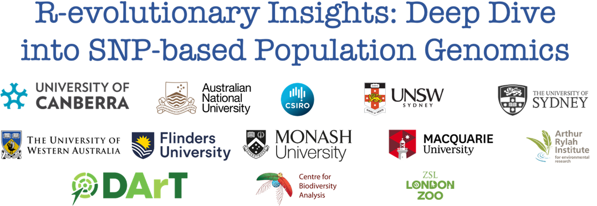
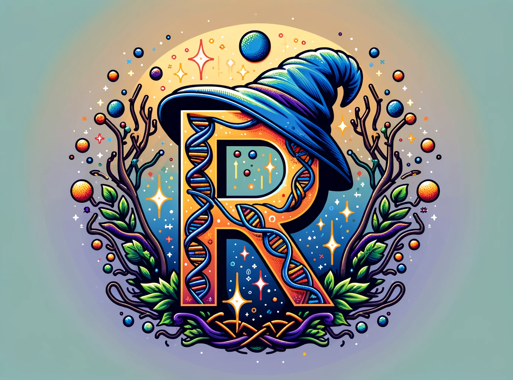

Kioloa PopGen

Welcome!
Welcome, Fellow Magical Beings, to our 5-day spellbinding journey in the mystical realm of Population Genetics using the ancient art of R! We’re over the moon (and not just because we’ve mastered levitation spells) to have you join us at the enchanted Kioloa ANU Coastal Campus. Nestled among the spellbound forests of Murramarang Nation Park and the crystal-clear waters of southern New South Wales, our meeting lair couldn’t be more perfect. When you’re not weaving R spells, you’ll find yourself spoiled for choice with magical brews (a.k.a. coffee) and breathtaking sceneries.
Our coven is as varied as the potions in a wizard’s pantry, bringing together sorcerers from all corners of the realm. Here, every sorcerer and sorceress will don both the student’s cloak and the teacher’s hat, expanding their arcane knowledge in genetics for the noble causes of biodiversity conservation and ecosystem restoration. Expect a cauldron bubbling with interaction, where being right is as celebrated as making mistakes, where sensitivity meets resilience, and where every voice conjures new spells of knowledge, perspective, and innovation.
Our quest is to master key incantations in population genetics, with our wands pointed firmly at the R statistical grimoire. We’re ditching the dusty tomes for hands-on magic, aiming to empower you to conjure your own population genetics enchantments by the end of our gathering. And fear not, there will be ample time to apply these spells on your own datasets.
Our magic words? Cooperation, flexibility, and dedication. We embark on this journey with a spirit of camaraderie, ready to share potions, carry scrolls, and lend a helping wand in times of need. The path may twist and turn, with unexpected dragons (breakdowns), storms (rain), and spells gone awry (tech hiccups), but our collective humour and knack for improvisation will see us through.
We are united by a deep-seated dedication to unravelling the mysteries of genetics, a passion that burns as bright within you as it does within us. We believe this adventure will be rewarding not just intellectually, but also aesthetically, socially, and culturally. We can’t wait to embark on this enchanting journey with you. May our time together be as fulfilling as finding the philosopher’s stone!

Here are some things you might see along your journey:
Below is an exercise box, this is encouraging you to give it a go yourself!
 Give the
Give the code a go!
Below is a tip box, with added insights for your journey.
take a look…
A variety of things to learn!
Below is a caution box, take note, this will keep you on your path.
Take CARE! It is easy to go astray, I am here to help.
Below is a warning box! Be careful and take head of what it says.
NOTICE! Thank you for noticing this warning!
A big thank you to the developers!
DartR published first by Gruber et al. (2018), and DartR V2 published by Mijangos et al. (2022)